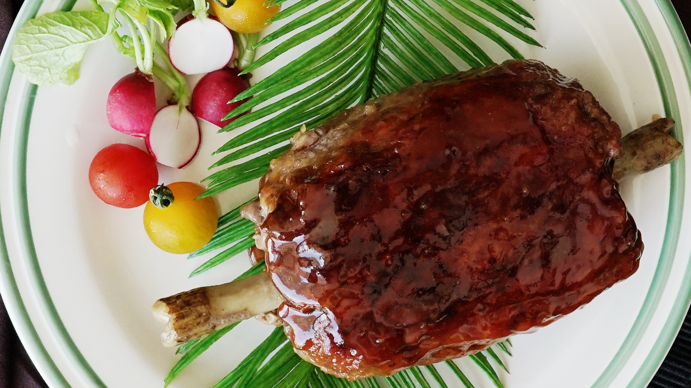

Anime Meat Recipe

This humongous meat shank is something out of an anime ... literally.
Ingredients
- 150 grams thinly-sliced beef
- 1 stick gobo (burdock root) , cut into 15 centimeters thickness
Meat
- 400 grams ground meat
- 80 grams chopped onion
- 1 tablespoon panko bread crumbs
- 1 tablespoon milk
- Salt
- Pepper
- Nutmeg
- 1 teaspoon vegetable oil
- Potato starch
Sauce
- 50cc sake
- 30cc soy sauce
- 30cc mirin
- 2 tablespoons sugar
- 1 teaspoon grated garlic
Directions
Anime Meat
- Peel, cut and shape burdock root to the size of a bone.
- Combine ingredients for the meat in a bowl and mix until combined.
- Transfer meat onto a sheet of plastic wrap and place the burdock on top. Wrap the meat around the burdock stick.
- Wrap the thinly-sliced beef around the ground beef mixture.
- Sprinkle with potato starch.
- Heat some oil in a frying pan and cook the meat on all sides over medium heat until nicely browned.
- Cover with aluminum foil and turn heat to low. Steam for 30 minutes or until meat is done.
Sauce
- in ingredients for the sauce and cook until slightly thickened. Transfer to a plate and enjoy.